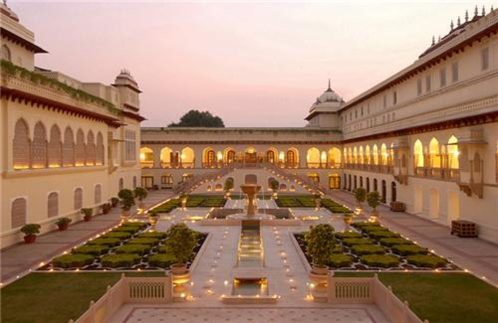
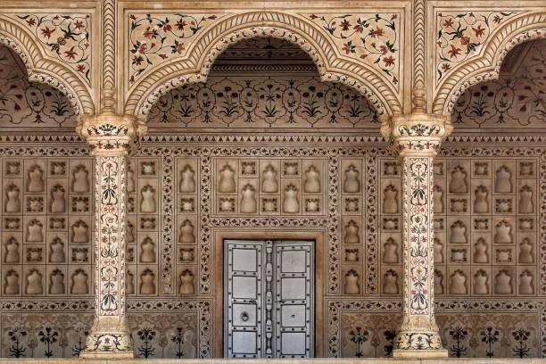
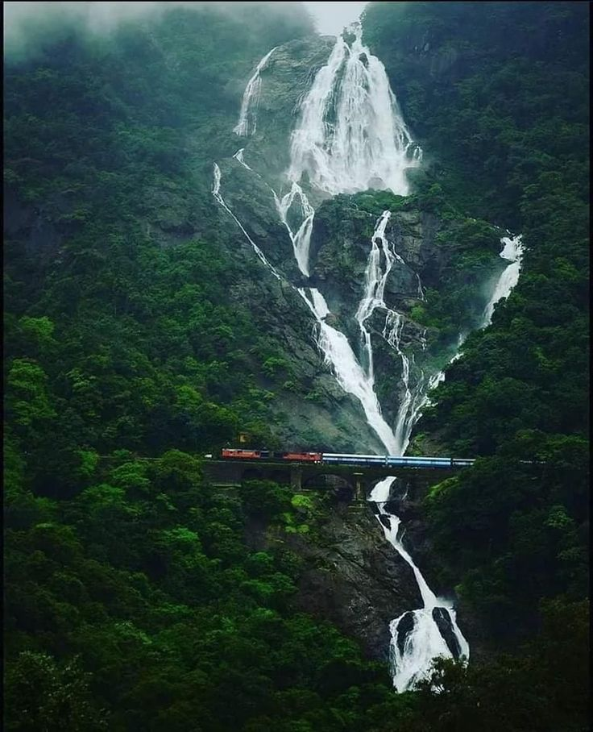

Agra, located in the northern Indian state of Uttar Pradesh, is a city that resonates with grandeur, heritage, and architectural brilliance. It sits majestically on the banks of the Yamuna River and has long been a cornerstone of India’s rich cultural tapestry. Though it is globally synonymous with the Taj Mahal, Agra’s historical and cultural significance stretches far beyond this iconic monument. Historically, Agra rose to prominence during the reign of the Delhi Sultanate in the 11th century but truly flourished under the Mughals in the 16th and 17th centuries. It served as the capital of the Mughal Empire under rulers such as Akbar, Jahangir, and Shah Jahan, who transformed the city into a center of art, learning, commerce, and architecture. Under Emperor Akbar’s vision, Agra became the site of many monumental structures, including the massive Agra Fort and the planned city of Fatehpur Sikri, located just outside its bounds. Shah Jahan, Akbar’s grandson, elevated the city’s splendor with the creation of the Taj Mahal—an eternal symbol of love built in memory of his wife Mumtaz Mahal.


Agra also finds itself strategically placed on popular tourist circuits. Explore the Golden Triangle tourist circuit, along with Delhi and Jaipur, or delve deeper into the state’s rich culture through the Uttar Pradesh Heritage Arc, connecting Agra to Lucknow, the state capital, and the holy city of Varanasi.
Iconic white Marble mausoleum
Dharmapuri, near Yamuna River, Agra, Uttar Pradesh.
6:00AM - 6:30PM (Closed on Fridays)
Red sandstone fort
Rakabganj, near Taj Mahal, Agra, Uttar Pradesh.
6:00AM - 6:00PM
Riverfront garden with Taj view
Opposite Taj Mahal, across the Yamuna River, Agra, Uttar Pradesh.
Sunrise to Sunset
Historic city by Akbar
40 km west of Agra, near Bharatpur, Uttar Pradesh.
6:00AM - 6:30PM
Famous sweet of Agra
Hari Parvat Crossing, Sadar Bazaar, Agra.
Mughlai dishes, thalis and lassi
Near South Gate of Taj Mahal, Taj Ganj, Agra.
Popular for Bedai & Jalebi
M.G. Road, Pratap Pura, near St. John’s College, Agra.

India’s Tourism, MI Road Delhi
📞 +91 141 2822863
📧 info@indiatourism.gov.in
🕘 Mon–Sat, 9:00AM–6:00PM